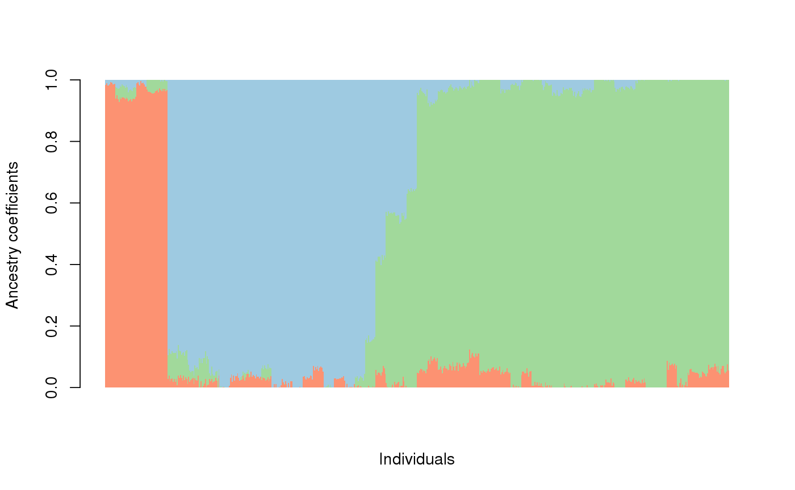

This function converts data imported from the STRUCTURE format or from the TESS 2.3 format to the tess3 matrix format.
tess2tess3(dataframe = NULL, TESS = TRUE, diploid = TRUE, FORMAT = 1, extra.row = 0, extra.column = 0)
| dataframe | a data frame read from a STRUCTURE or a TESS input file. Missing data must be encoded by "-9" or by any negative value. |
|---|---|
| TESS | a boolean value set to |
| diploid | a boolean value set to |
| FORMAT | an integer value equal to 1 for markers encoded using one row of data for each individual, and 2 for markers encoded using two rows of data for each individual. |
| extra.row | an integer value indicating the number of extra rows in the header of the input file (marker ids). |
| extra.column | an integer value indicating the number of extra columns in the input file. Extra columns can include individual ids, pop ids,
phenotypes, and they come before the geographic coordinates in TESS input files. Geographic coordinates must be considered as extra columns if the
flag |
An object of class list containing a genotype matrix (X) and individual geographic coordinates (coord).
X a numeric matrix of genotypes with values 0,1,2 or NA.
coord a numeric matrix of geographic coordinates.
library(tess3r) data(durand09) d09tess3 <- tess2tess3(durand09, FORMAT = 2, extra.column = 1)#> Input file in the TESS format. The genotypic matrix has 600 individuals and 100 markers. #> The number of extra rows is 0 and the number of extra columns is 1 . #> The input file contains no missing genotypes.#> == Computing spectral decomposition of graph laplacian matrix: done #> ==Main loop with 4 threads: done #> == Computing spectral decomposition of graph laplacian matrix: done #> ==Main loop with 4 threads: done #> == Computing spectral decomposition of graph laplacian matrix: done #> ==Main loop with 4 threads: doneQmatrix <- Gettess3res(obj, K = 3)$Q barplot(Qmatrix, sort.by.Q = FALSE, border = NA, space = 0, xlab = "Individuals", ylab = "Ancestry coefficients")#> Use CreatePalette() to define color palettes.#> $order #> [1] 1 2 3 4 5 6 7 8 9 10 11 12 13 14 15 16 17 18 #> [19] 19 20 21 22 23 24 25 26 27 28 29 30 31 32 33 34 35 36 #> [37] 37 38 39 40 41 42 43 44 45 46 47 48 49 50 51 52 53 54 #> [55] 55 56 57 58 59 60 61 62 63 64 65 66 67 68 69 70 71 72 #> [73] 73 74 75 76 77 78 79 80 81 82 83 84 85 86 87 88 89 90 #> [91] 91 92 93 94 95 96 97 98 99 100 101 102 103 104 105 106 107 108 #> [109] 109 110 111 112 113 114 115 116 117 118 119 120 121 122 123 124 125 126 #> [127] 127 128 129 130 131 132 133 134 135 136 137 138 139 140 141 142 143 144 #> [145] 145 146 147 148 149 150 151 152 153 154 155 156 157 158 159 160 161 162 #> [163] 163 164 165 166 167 168 169 170 171 172 173 174 175 176 177 178 179 180 #> [181] 181 182 183 184 185 186 187 188 189 190 191 192 193 194 195 196 197 198 #> [199] 199 200 201 202 203 204 205 206 207 208 209 210 211 212 213 214 215 216 #> [217] 217 218 219 220 221 222 223 224 225 226 227 228 229 230 231 232 233 234 #> [235] 235 236 237 238 239 240 241 242 243 244 245 246 247 248 249 250 251 252 #> [253] 253 254 255 256 257 258 259 260 261 262 263 264 265 266 267 268 269 270 #> [271] 271 272 273 274 275 276 277 278 279 280 281 282 283 284 285 286 287 288 #> [289] 289 290 291 292 293 294 295 296 297 298 299 300 301 302 303 304 305 306 #> [307] 307 308 309 310 311 312 313 314 315 316 317 318 319 320 321 322 323 324 #> [325] 325 326 327 328 329 330 331 332 333 334 335 336 337 338 339 340 341 342 #> [343] 343 344 345 346 347 348 349 350 351 352 353 354 355 356 357 358 359 360 #> [361] 361 362 363 364 365 366 367 368 369 370 371 372 373 374 375 376 377 378 #> [379] 379 380 381 382 383 384 385 386 387 388 389 390 391 392 393 394 395 396 #> [397] 397 398 399 400 401 402 403 404 405 406 407 408 409 410 411 412 413 414 #> [415] 415 416 417 418 419 420 421 422 423 424 425 426 427 428 429 430 431 432 #> [433] 433 434 435 436 437 438 439 440 441 442 443 444 445 446 447 448 449 450 #> [451] 451 452 453 454 455 456 457 458 459 460 461 462 463 464 465 466 467 468 #> [469] 469 470 471 472 473 474 475 476 477 478 479 480 481 482 483 484 485 486 #> [487] 487 488 489 490 491 492 493 494 495 496 497 498 499 500 501 502 503 504 #> [505] 505 506 507 508 509 510 511 512 513 514 515 516 517 518 519 520 521 522 #> [523] 523 524 525 526 527 528 529 530 531 532 533 534 535 536 537 538 539 540 #> [541] 541 542 543 544 545 546 547 548 549 550 551 552 553 554 555 556 557 558 #> [559] 559 560 561 562 563 564 565 566 567 568 569 570 571 572 573 574 575 576 #> [577] 577 578 579 580 581 582 583 584 585 586 587 588 589 590 591 592 593 594 #> [595] 595 596 597 598 599 600 #>